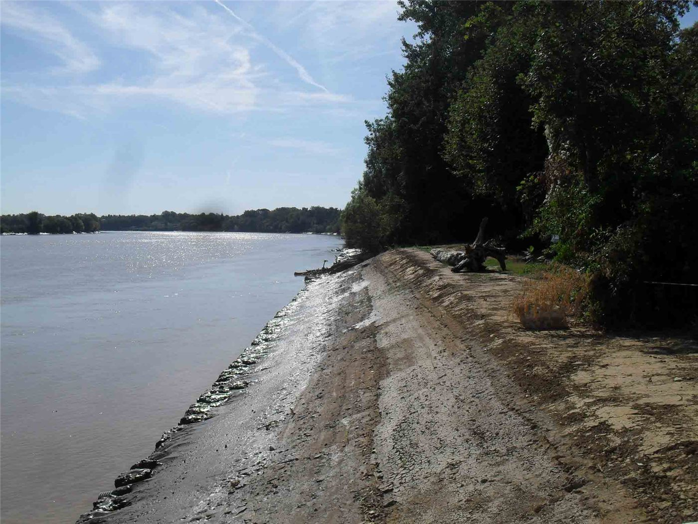
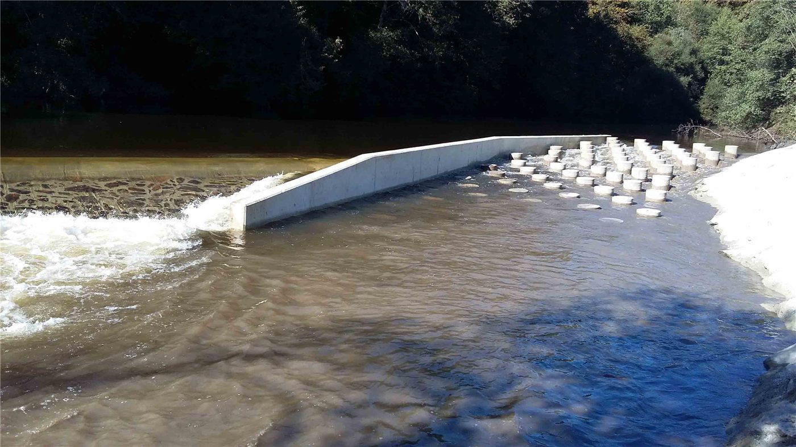

Restaurer une rivière, protéger une berge ou rendre un seuil franchissable par les poissons : ces projets ne se conçoivent pas comme un ouvrage classique. Ils demandent d’abord de comprendre le fonctionnement du milieu, puis de s’appuyer sur lui plutôt que de le contraindre.
Comprendre avant d’agir
L’analyse d’un milieu aquatique croise plusieurs regards. L’hydrologie et l’hydraulique décrivent les débits, les hauteurs d’eau et les crues. L’hydromorphologie s’intéresse à la forme du lit, au transport des sédiments et à l’état des berges. L’écologie, enfin, recense les espèces présentes et les habitats dont elles ont besoin.
- Relevés topographiques et profils du lit
- Étude des débits et modélisation hydraulique
- Inventaires de la faune et de la flore
- Identification des zones humides et des obstacles à la continuité
Travailler avec le vivant
Le génie écologique utilise les végétaux, les matériaux naturels et la dynamique de la rivière elle-même. Plantations d’hélophytes, fascines, enrochements limités aux zones les plus exposées : les solutions sont choisies pour être efficaces tout en recréant des habitats.
À Vayres, les berges de la Dordogne s’érodaient en amont du port. La protection associe des enrochements calcaires en pied de berge, un retalutage et la plantation d’hélophytes, qui stabilisent le sol et accueillent la faune.

Rétablir la continuité écologique
Seuils, digues et anciens moulins empêchent les poissons de remonter les cours d’eau et bloquent les sédiments. Pour rétablir la continuité, plusieurs solutions existent : effacement de l’ouvrage, abaissement, ou création d’une passe à poissons.
À Uzerche, sur la Vézère, une passe naturelle a été aménagée au droit de la digue des Carderies. Elle reproduit un petit bras de rivière, avec des blocs qui créent des zones de repos pour les poissons.

Un aménagement réussi est un aménagement que la rivière adopte.
Notre accompagnement
Diagnostic, conception, dossiers réglementaires et suivi des travaux : retrouvez notre approche sur la page Milieux aquatiques.